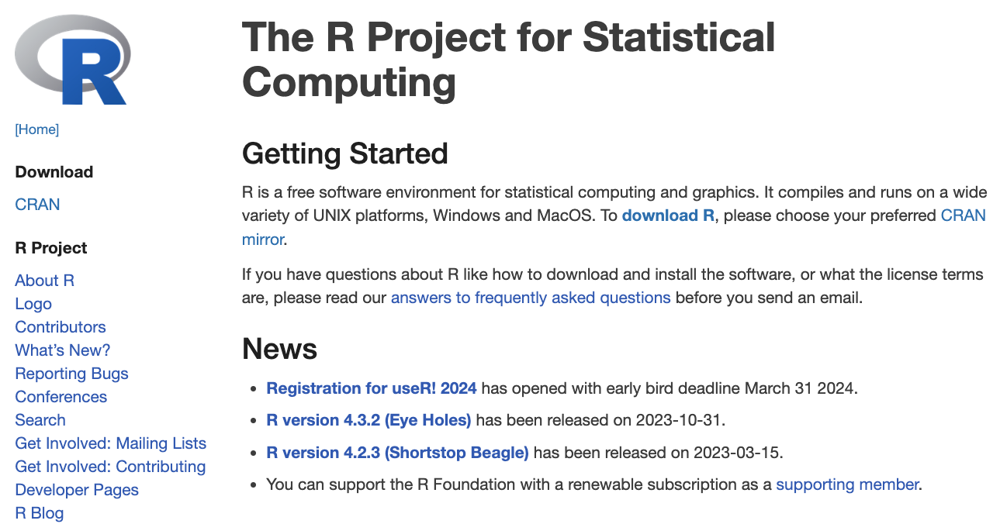

Instalación local de R y R Studio.
Gráficas interactivas con plotly
Creación de dashboards con Quarto
Incluir ejemplo de Datos Nuevo León.
Hasta ahora, hemos utilizado R a través de Google Colab. Todos los cálculos se han hecho en la nube de Google.
Sin embargo, hay funciones avanzadas de R que no actualmente están disponibles en Google Colab, como la creación de gráficas interactivas y dashboards.
Para hacer gráficos o visualizaciones se tiene que usar la computadora y programas especiales. Hay muchos como Python tableu, o incluso, excel. Sin embargo los mas bonitos son los de R.
El conocer r te ayudara a tu CV porque, después de este curso, puedes poner conocimiento básico de analysis de datos con R.
Para usar estas funciones, debemos de instalar R en nuestra computadora, para hacer todos los cálculos localmente.
También, debemos de instalar una interfaz para R. La más común y poderosa es R Studio.
La instalación de todos los programas necesarios para manipular y visualizar datos en tu computadora requiere de tres pasos:
Ve a la siguiente liga: https://www.r-project.org/
Ve a la siguiente liga: https://posit.co/
También puedes ir mas directo a la descarga del programa aquí https://posit.co/download/rstudio-desktop/
Una vez instalado el software, debemos de instalar las librerías dplyr, readxl, ggplot y ggformula.
Para esto, podemos instalar una única libreria llamada tidyverse que contiene todas estas librerías.
Para esto, corre el siguiente comando en la consola de R: install.packages("tidyverse").
Plotly es una biblioteca de visualización de datos que permite crear gráficos interactivos y atractivos de manera fácil y eficiente. Plotly se destaca por su capacidad para generar gráficos que pueden interactuar con el usuario final, lo que resulta ideal para aplicaciones web y dashboards.
Algunas de sus características principales son:
Variedad de gráficos.
Compatibilidad con Python, R y ggplot2.
Integración con Dash para crear dashboards.
En R, plotly está disponible a través de una librería con el mismo nombre.
Instalamos la librería usando install.packages("plotly").
Llamamos usando library(plotly).
Las gráficas de ggplot2 son estáticas porque no permiten interacción con el usuario.
Para hacerlas interactivas con plotly, primero guardamos la gráfica de ggplot a un objeto llamado my_plot y usamos la función ggplotly(my_plot) de la libreria plotly.
# install.packages("plotly)
library(plotly)
library(ggformula)
library(readxl)
penguins_data = read_excel("penguins.xlsx")
my_plot = gf_point(bill_length_mm ~ bill_depth_mm, data = penguins_data,
color = ~species) + labs(title = "Profundidad y longitud del pico",
subtitle = "Dimensiones para pingüinos en Adelie,
Chinstrap, and Gentoo",
x = "Profundidad del pico (mm)", y = "Longitud del pico (mm)",
color = "Especie") + scale_color_viridis_d()
ggplotly(my_plot)Dashboards are a useful way to communicate large amounts of information visually and quickly. Create one with the flexdashboard::flex_dashboard output format, as in the .Rmd file below (available here on RStudio Cloud):
Summarize the material here
https://epirhandbook.com/en/dashboards-with-r-markdown.html